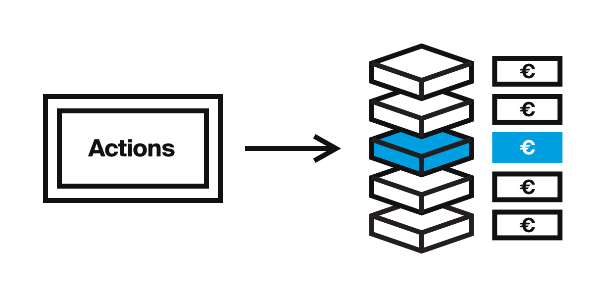
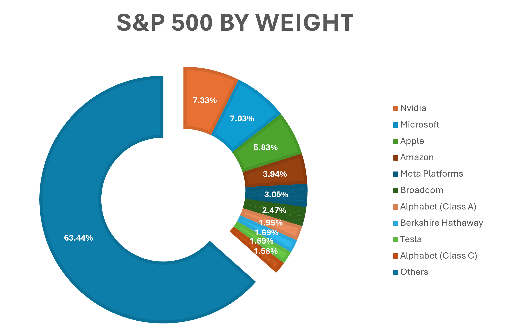
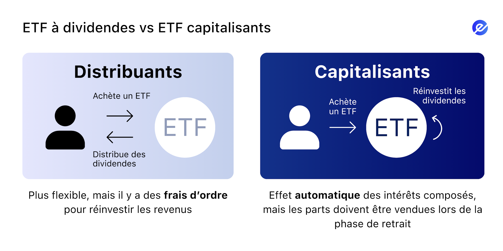

Vous avez ouvert votre compte (le contenant), vous avez choisi votre stratégie (long terme). Il reste une dernière question : Que met-on dans le panier ?
Sur votre interface de courtier, vous allez vous retrouver face à des milliers de noms, de codes et de sigles. Pour ne pas vous perdre, imaginez que vous êtes dans un supermarché financier. Il y a trois rayons principaux : les Actions (le frais), les Obligations (la conserve) et les ETF (le panier garni).
1. Les Actions (Stocks) : La brique élémentaire 🧱
Nous en avons déjà parlé : une action est un titre de propriété. C'est l'instrument le plus pur.
Quand vous achetez une action LVMH, vous décidez de devenir partenaire spécifique de Bernard Arnault. Vous pariez sur le fait que cette entreprise précise va vendre plus de sacs à main que ses concurrents dans les 10 prochaines années.
Pour qui ? L'achat d'actions en direct (ce qu'on appelle le "Stock Picking") est destiné à ceux qui veulent :
- Battre la performance moyenne du marché (viser 12% ou 15% / an au lieu de 8%).
- Choisir précisément leurs combats (investir dans l'éthique, la tech, le luxe...).
- Avoir un droit de décision dans une entreprise.

Cela demande cependant un effort d'analyse (lire les bilans, comprendre le business model). C'est tout l'objet de la stratégie Quality Investing que nous verrons dans les modules suivants.
Pourquoi les entreprises vendent-elles des actions ? (L'IPO) 📢
C'est une question fondamentale. Pourquoi une entreprise qui gagne des millions voudrait-elle partager son gâteau avec des inconnus comme vous et moi ?
Imaginez que vous êtes le fondateur de Tesla. Vous voulez construire une nouvelle "Gigafactory" à 5 milliards de dollars. Vous avez deux options pour trouver l'argent :
- La Dette (Aller voir la banque) : La banque vous prête l'argent. Le problème, c'est que vous devez rembourser chaque mois avec des intérêts, que l'usine soit rentables ou non. Cela met une pression énorme sur la trésorerie.
- Les Actions (Aller en Bourse) : C'est la solution magique. Vous vendez 20% de votre entreprise au public. En échange, vous recevez 5 milliards de dollars de "Cash" immédiat.
- Processus par lequel une entreprise privée ouvre son capital au public pour la première fois.
- C'est le moment où elle passe de "l'entreprise du fondateur" à "l'entreprise de tout le monde".
Nous verrons les IPOs plus en détails lors du prochain module.
L'avantage pour l'entreprise : C'est de l'argent "gratuit". Elle n'a jamais besoin de rembourser ces 5 milliards. En contrepartie, elle accepte de partager ses futurs bénéfices et le pouvoir de vote avec ses nouveaux actionnaires.
Vos droits en tant qu'actionnaire :
- 🗳️ Droit de vote : Vous pouvez voter aux Assemblées Générales (sur le salaire du PDG, la stratégie climat, etc.).
- 💰 Droit au dividende : Si l'entreprise fait du profit et décide de le distribuer, vous touchez votre part proportionnelle.
- 📈 Droit de propriété : Si l'entreprise est rachetée ou liquidée (et qu'il reste de l'argent), vous touchez votre part.
2. Les Obligations (Bonds) : L'amortisseur 🛡️
Si l'action est un titre de propriété, l'obligation est un titre de créance. Concrètement, vous ne devenez pas propriétaire, vous devenez le banquier.
Vous prêtez de l'argent à un État (OAT françaises, Bons du Trésor US) ou à une entreprise (Apple, Coca-Cola) pour une durée définie (ex: 10 ans) en échange d'un intérêt régulier (le coupon).
La différence fondamentale :
- Si l'entreprise fait faillite, les actionnaires perdent tout. Les obligataires (prêteurs) sont remboursés en priorité (s'il reste de l'argent). C'est donc moins risqué.
- En contrepartie, le gain est limité. Si l'entreprise double ses bénéfices, l'actionnaire double sa mise. L'obligataire, lui, ne touchera que ses 3% ou 4% d'intérêts prévus au contrat, pas un centime de plus.
Note : Dans une stratégie de construction de patrimoine dynamique (avant 50 ans), les obligations sont souvent peu utilisées car leur rendement est trop faible comparé aux actions.
3. Les ETF (Trackers) : La révolution pour les particuliers 🧺
C'est l'instrument financier qui a démocratisé la Bourse. Si vous ne deviez retenir qu'un seul acronyme, c'est celui-ci.
- Fonds d'investissement coté en Bourse qui réplique automatiquement la performance d'un indice (comme le CAC 40 ou le S&P 500).
- Aussi appelé "Tracker" car il traque (suit) le marché.
Quand vous achetez 1 part d'ETF S&P 500 (environ 40€ ou 400€ selon l'ETF), vous achetez instantanément, en une seconde, une fraction des 500 plus grandes entreprises américaines (Apple, Microsoft, Amazon, Google, etc.).
C'est l'arme absolue de la Diversification. Vous n'avez plus besoin d'analyser les entreprises une par une. Vous achetez "le marché" dans son ensemble.

John Bogle (Fondateur de Vanguard) 🧠
"Ne cherchez pas l'aiguille dans la botte de foin. Achetez la botte de foin toute entière !"
ETF Capitalisant ou Distribuant 🧐 ?
Quand vous chercherez un ETF, vous verrez souvent ces abréviations cryptiques. Voici la différence :
- Distribuants (Dist) : L'ETF reçoit les dividendes des entreprises (Apple, Microsoft...) et vous les reverse en cash sur votre compte. C'est sympa pour le moral, mais fiscalement lourd (vous payez une taxe à chaque versement).
- Capitalisants (Acc) : L'ETF reçoit les dividendes mais les réinvestit automatiquement pour acheter de nouvelles actions à l'intérieur du fonds. Vous ne touchez rien, mais le prix de votre part monte plus vite.
💡 Conseil : Pour une stratégie long terme (et surtout en Belgique), privilégiez les ETF Capitalisants (Acc). Ils optimisent les intérêts composés en évitant le frottement fiscal des dividendes.

💸 Les Frais Cachés (TER)
Un ETF n'est pas bénévole. La société qui le gère (BlackRock, Amundi...) se rémunère. C'est le TER (Total Expense Ratio).
Ces frais sont "invisibles" (directement déduits de la performance de l'ETF). Ils varient généralement entre 0,05% et 0,60% par an.
Règle d'or : Pour un ETF standard (S&P 500 ou Monde), ne payez jamais plus de 0,20% ou 0,30% de frais par an. Au-delà, c'est trop cher.
Le Match : Actions en direct (Stock Picking) vs ETF 🥊
C'est le grand débat. Que choisir ? Voici de quoi vous décider.
| ETF (Approche Passive) | STOCK PICKING (Approche Active) |
|---|---|
|
|
4. Attention danger : Les Produits Dérivés 💣
Enfin, sur votre courtier, vous verrez peut-être des onglets nommés "Warrants", "Turbos", "Certificats", "CFD" ou "Options" avec des promesses de gains x10 ou x100.
Notre conseil est simple : N'y touchez pas.
Ce ne sont pas des investissements, ce sont des paris à effet de levier. Si l'action baisse de 1%, vous pouvez perdre 10% ou 20%. Pire, vous pouvez perdre plus que votre mise de départ. Ces produits sont conçus pour le trading très court terme et enrichissent surtout les émetteurs. Pour construire une fortune pérenne, restez sur les Actions et les ETF.
🔑 Ce qu'il faut retenir
Pour débuter, ignorez les produits complexes. Concentrez-vous sur deux outils :
1. Les ETF (Trackers) : Pour investir simplement, diversifier instantanément et suivre la performance mondiale à moindre coût.
2. Les Actions en direct (Stock Picking) : Si vous souhaitez analyser des entreprises de qualité (Quality Investing) pour tenter de battre le marché et cibler vos investissements.